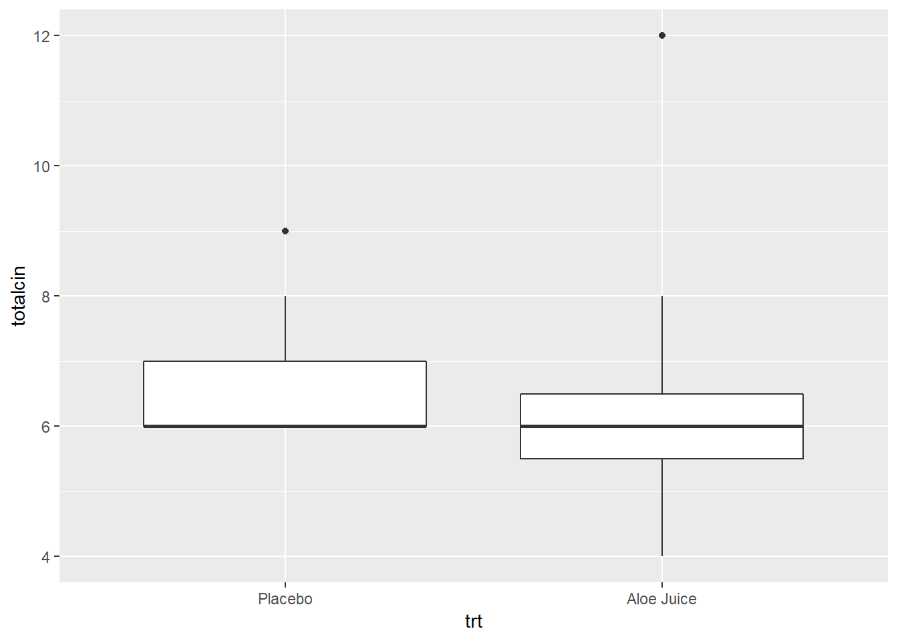
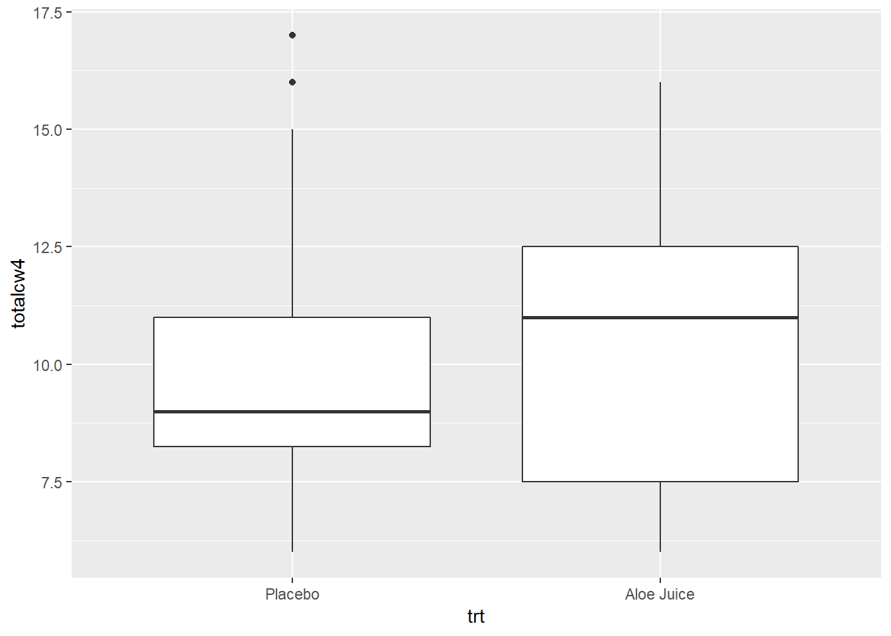

2 t TEST FOR THE DIFFERENCE IN 2 MEANS, INDEPENDENT SAMPLES
2.1 Required Packages
library(tidyverse) # Loads several very helpful 'tidy' packages
library(haven) # Read in SPSS datasets
library(car) # Companion for Applied Regression (and ANOVA)2.2 Example Dataset - Cancer Experiment
The Cancer dataset was introduced in “t TEST FOR THE MEAN OF 1 SAMPLE”.
2.3 Check Means and SD’s
cancer_clean %>%
dplyr::group_by(trt) %>%
furniture::table1(totalcin, totalcw4)
--------------------------------
trt
Placebo Aloe Juice
n = 14 n = 11
totalcin
6.6 (0.9) 6.5 (2.1)
totalcw4
10.1 (3.6) 10.6 (3.5)
--------------------------------2.4 Assumtion Check
2.4.1 Eyeball method
Do the two groups, treatment and control, have the same amount of spread (standard deviations) BUT different centers (means)?
cancer_clean %>%
ggplot(aes(x = trt,
y = totalcin)) +
geom_boxplot()
cancer_clean %>%
ggplot(aes(x = trt,
y = totalcw4)) +
geom_boxplot()
2.4.2 Homogeneity of Variance (HOV) Formal Test
Before performing the \(t\) test, check to see if the assumption of homogeneity of variance is met using Levene’s Test. For a independent samples t-test for means, the groups need to have the same amount of spread (SD) in the measure of interest.
Use the car:leveneTest() function to do this. Inside the funtion you need to specify at least three things (sepearated by commas):
- the formula:
continuous_var ~ grouping_var(replace with your variable names) - the dataset:
data = .to pipe it from above - the center:
center = "mean"since we are comparing means
Do the participants in the treatment and control groups have the same spread in oral condition at BASELINE?
cancer_clean %>%
car::leveneTest(totalcin ~ trt, # formula: continuous_var ~ grouping_var
data = ., # pipe in the dataset
center = "mean") # The default is "median"Levene's Test for Homogeneity of Variance (center = "mean")
Df F value Pr(>F)
group 1 2.2103 0.1507
23 No violations of homogeneity were detected, \(F(1, 23) = 2.210, p = .151\).
Do the participants in the treatment and control groups have the same spread in oral condition at the FOURTH WEEK?
cancer_clean %>%
car::leveneTest(totalcw4 ~ trt, # formula: continuous_var ~ grouping_var
data = ., # pipe in the dataset
center = "mean") # The default is "median"Levene's Test for Homogeneity of Variance (center = "mean")
Df F value Pr(>F)
group 1 0 0.995
23 No violations of homogeneity were detected, \(F(1, 23) = 0, p = .995\).
2.5 2 independent Sample Means
Use the same t.test() funtion we have used in the prior chapters. This time you need to speficy a few more options.
the formula:
continuous_var ~ grouping_var(replace with your variable names)the dataset:
data = .to pipe it from aboveis homogeneity satified?:
var.equal = TRUE(NOT the default)number of tails:
alternative = "two.sided"independent vs. paired:
paired = FALSEconfidence level:
conf.level = #
Do the participants in the treatment group have a different average oral condition at BASELINE, compared to the control group?
# Minimal syntax
cancer_clean %>%
t.test(totalcin ~ trt, # formula: continuous_var ~ grouping_var
data = ., # pipe in the dataset
var.equal = TRUE) # HOV was violated (option = TRUE)
Two Sample t-test
data: totalcin by trt
t = 0.18566, df = 23, p-value = 0.8543
alternative hypothesis: true difference in means is not equal to 0
95 percent confidence interval:
-1.185479 1.419245
sample estimates:
mean in group Placebo mean in group Aloe Juice
6.571429 6.454545 No evidence of a differnece in mean oral condition at baseline, \(t(23) = 0.186, p = .854\).
Do the participants in the treatment group have a different average oral condition at the FOURTH WEEK, compared to the control group?
# Fully specified function
cancer_clean %>%
t.test(totalcw4 ~ trt, # formula: continuous_var ~ grouping_var
data = ., # pipe in the dataset
var.equal = TRUE, # default: HOV was violated (option = TRUE)
alternative = "two.sided", # default: 2 sided (options = "less", "greater")
paired = FALSE, # default: independent (option = TRUE)
conf.level = .95) # default: 95% (option = .9, .90, ect.)
Two Sample t-test
data: totalcw4 by trt
t = -0.34598, df = 23, p-value = 0.7325
alternative hypothesis: true difference in means is not equal to 0
95 percent confidence interval:
-3.444215 2.457202
sample estimates:
mean in group Placebo mean in group Aloe Juice
10.14286 10.63636 No evidence of a differnece in mean oral condition at the fourth week, \(t(23) = -0.350, p = .733\).